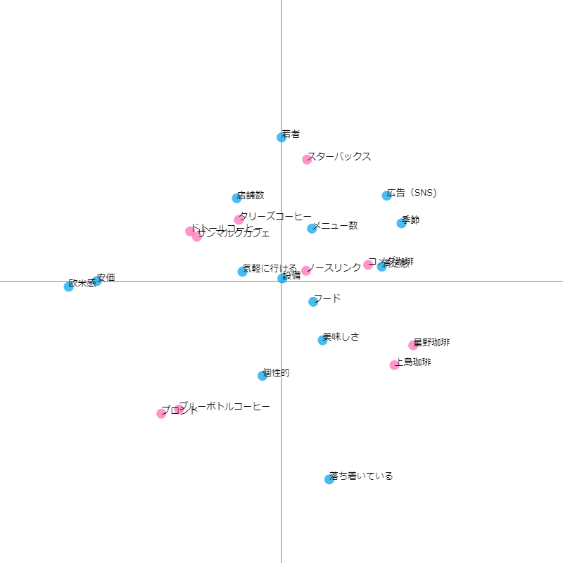
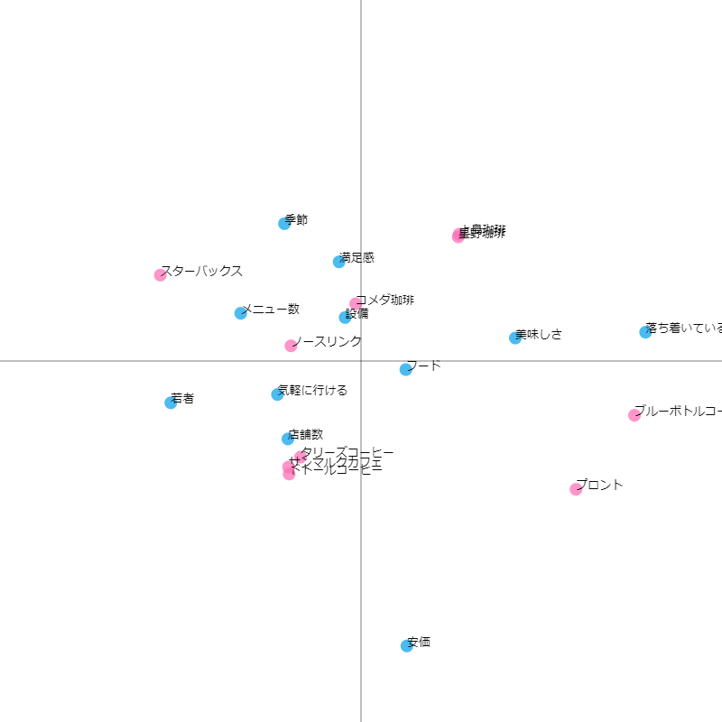
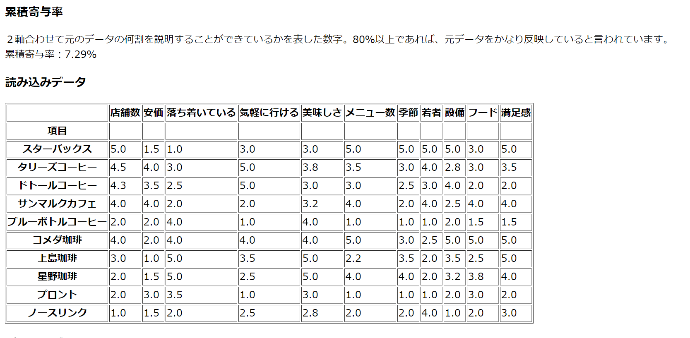

コレスポンデンス分析
コーヒーチェーン店で比較

あまり良い結果で出来なかったためやり直し↓（それでもいい結果にはならず。。。）


分析
コーヒーチェーン店を比較した結果の考察
- 右側は落ち着いているイメージのある店が多く、逆に左側は落ち着いている感じはないが気軽に行けるイメージが強い。
- スターバックスは季節感やメニュー数が近くにあることからほかのチェーン店に比べて、突出している。
- コメダ珈琲は中央にあるため、突出しているところはないが全体的に良いといえる。
- しかし、ノースリンクは同じく中央付近にあるが全体的に評価は低いため、中央にあるからどうとは言えない。
csvファイル